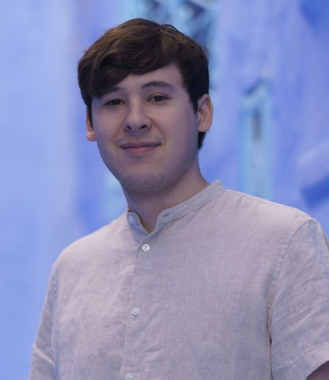
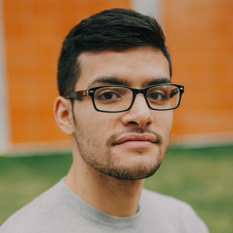
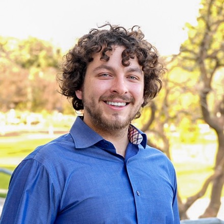
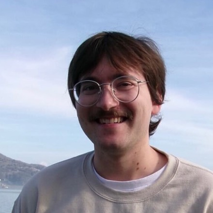
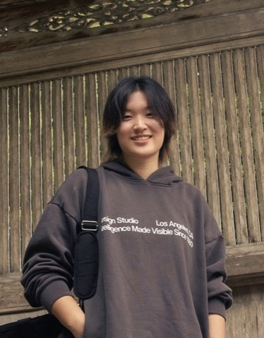
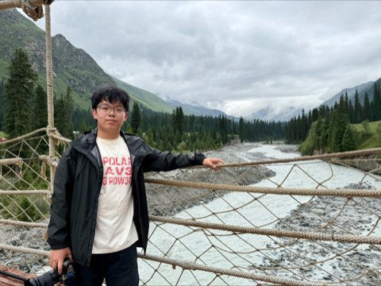
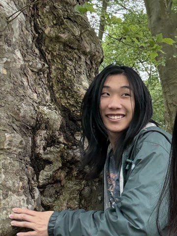

People
Prospective students. We do not have funded openings for new PhD students at this time. At CMU, MSE admissions decisions are made by the department rather than by individual faculty. CMU undergraduates interested in research are welcome to get in touch.
No postdoctoral positions are available at this time.

Juan R. Chamorro
Wean Hall 4305 · (412) 268-7178
jrchamorro@cmu.edu · Google Scholar

Julian Marmo
Julian was raised in Queens, New York, and earned his BA in Electrical Engineering from Drexel University in 2024. His research background spans device fabrication, material development for polymer additive manufacturing, and metamaterial design. He now works on quantum materials synthesis and flux crystal growth, and leads development of the group's AutoFlux platform. In his free time, Julian enjoys card games, watching sports, reading, and spending time with his dogs. He joined the group in Fall 2024.

Nicholas Shkolnikov
Nicholas is originally from San Francisco and earned his undergraduate degree in chemical engineering at Cal Poly Pomona, where he worked on CO2 emissions mitigation through green methanol and dimethyl ether synthesis and on failure analysis of lithium-ion batteries. He researches bulk solid state synthesis and characterization of inorganic compounds that can host quantum phenomena. Outside the lab he enjoys running, cooking, reading, and board games. He joined the group in Fall 2024.
Tong Wang
Tong was born in Dalian, China. She obtained her B.Eng. in Electronic Science and Technology from Northwest University in 2021 and her M.Eng. from the University of Electronic Science and Technology of China in 2024. Her earlier research focused on semiconductors and DFT calculations; she now works on materials synthesis and characterization as well as AI computer vision. In her free time she enjoys music, playing the zheng (a traditional Eastern stringed instrument), and building LEGO. She joined the group in Fall 2024.

Hayden Nuyens
Hayden grew up in San Rafael, California before moving south to get his BS in physics from UCLA, with research spanning radioactivity, optics, and deep learning. He earned his MS in materials science and engineering from Carnegie Mellon before joining the group, and now investigates solids with complex quantum mechanical behavior. In his free time he enjoys composing and listening to music, practicing bass guitar, pestering his cat, and playing video games. He joined the group in Fall 2025.
Dhiya Srikanth
Dhiya joined the group in Fall 2026 after completing her studies in materials science and engineering at Penn State.

Abby Chen
Luis Hierro

David Li

Daniel Yin
- Ryan Ngai, undergraduate researcher (Fall 2025)
- Stanley Holewa, REU student (Summer 2025)
- Cassius Nelson, undergraduate researcher (Spring 2025)